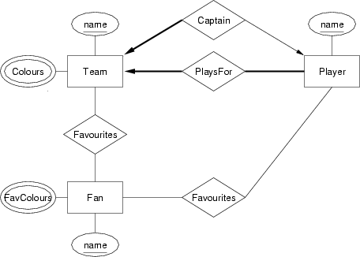

| COMP3311 23T1 |
Week 02 Tutorial Data Modelling, ER Model, Relational Model |
Database Systems |
- Meet the other members of your tute. If you are online turn on your microphone; if you don't have a microphone, post on the Chat. Say a little bit about yourself (e.g what degree you're doing, how much DB experience you have, what you hope to get out of this course).
-
In the context of database application development (aka
database engineering
), what are the aims of data modelling?Answer:
Data modelling works from a description of the requirements and aims to build a comprehensive description of the entities involved in the application and the relationships among these entities. The model constructed should ensure that all of the requirements can be met i.e. that all of the relevant data is represented and is structured in such a way that all of the operations mentioned in the requirements can be carried out.
The data model should give enough detail that a database schema can be derived from it without significant additional information being needed.
-
Describe the similarities and differences between the following similarly-named concepts:
- relationship in the entity-relationship data model
Answer:
- describes an association between n specific entities
- a collection of relationships forms a relationship set
- a relationship can have associated attributes
- relation in the relational data model
Answer:
- describes an association between a collection of attributes
- an instance of a relation is a set of tuples of attribute values
- a relation can be used to model a set of entities
- a relation can also be used to model relationship sets (n-ary relationships with associated attributes)
- every relation has a primary key
- relationship in the entity-relationship data model
-
What kind of data, relationships and constraints exist in this scenario?
- for each person, we need to record their tax file number (TFN), their real name, and their address
- everyone who earns money in Australia has a distinct tax file number
- authors write books, and may publish books using a ``pen-name'' (a name which appears as the author of the book and is different to their real name)
- editors ensure that books are written in a manner that is suitable for publication
- every editor works for just one publisher
- editors and authors have quite different skills; someone who is an editor cannot be an author, and vice versa
- a book may have several authors, just one author, or no authors (published anonymously)
- every book has one editor assigned to it, who liaises with the author(s) in getting the book ready for publication
- each book has a title, and an edition number (e.g. 1st, 2nd, 3rd)
- each published book is assigned a unique 13-digit number (its ISBN); different editions of the same book will have different ISBNs
- publishers are companies that publish (market/distribute) books
- each publisher is required to have a unique Australian business number (ABN)
- a publisher also has a name and address that need to be recorded
- a particular edition of a book is published by exactly one publisher
Answer:
Possible data:- people: authors, editors; organisations: publishers
- person's name, TFN, address
- books: published, unpublished
- book's title, edition, ISBN, ...
- publisher: ABN, name, address
- etc.
- author writes books (using pen-name)
- book is edited by editor
- etc.
- every person has exactly one, unique TFN
- every published work has exactly one, unique ISBN
- editors and authors must be distinct sets
- editor works for ≤ 1 publisher
- etc.
-
Consider some typical operations in the myUNSW system ...
- student enrols in a lab class
- student enrols in a course
- system prints a student transcript
For each of these operations:
- identify what data items are required
- consider relationships between these data items
- consider constraints on the data and relationships
Answer:
Operation: student enrols in a class.
Possible data:
- class information (day, time, location, quota, ...)
- room information (name, building, capacity, ...)
- course information (code, title, ...)
- etc.
- class enrolment (for classes in this course)
- course enrolment (for course containing class)
- etc.
- cannot enrol in more than one class for single course
- must be enrolled course before enrolling in classes
- etc.
Operation: student enrols in a course.
Possible data:
- course information (code, title, syllabus, pre-reqs, ...)
- course offering information (quota, lic, ...)
- etc.
- student enrolment (in previous/current courses)
- etc.
- cannot enrol in a full course
- cannot enrol if don't have pre-reqs
- cannot enrol in more than 24UC per semester
- etc.
Operation: system prints a student transcript.
Possible data:
- student information (name, id, ...)
- course information (code, title, UOC, ...)
- session information (year, code, dates, ...)
- etc.
- student enrolment (previous/current courses, marks/grades)
- course offering (course, session, ...)
- etc.
- none?
-
Researchers work on different research projects, and the connection between them can be modelled by a WorksOn relationship. Consider the following two different ER diagrams to represent this situation.
Describe the different semantics suggested by each of these diagrams.
Answer:
ER models for Researchers-WorksOn-Projects relationship.- the Time attribute is attached to the WorksOn relationship, which models the association between a researcher and a project that they work on ... thus, we are modelling the time that each researcher spends on each project that they are involved with
- the Time attribute is attached to the Project entity, and so must be a measure of time associated with the project (e.g. the total time allocated to the project)
In both cases, the thick line from Project to WorksOn indicates that every project must have at least one person working on it. On the other hand, the thin line from Researcher to WorksOn suggests that not every researcher needs to be working on a project.
-
Draw an ER diagram for the following application from the manufacturing industry:
- Each supplier has a unique name.
- More than one supplier can be located in the same city.
- Each part has a unique part number.
- Each part has a colour.
- A supplier can supply more than one part.
- A part can be supplied by more than one supplier.
- A supplier can supply a fixed quantity of each part.
Answer:
ER diagram for Supplier-Part scenario.

-
The following two ER diagrams give alternative design choices for associating a person with their favourite types of food. Explain when you might choose to use the second rather than the first:
Answer:
If the only information you needed on each cuisine was its name, either version would be satisfactory. However, if additional information was needed on each cuisine (e.g. country of origin or classic dish or heat-rating), then the second version would be essential, as it is the only one in which this additional information can be associated with the cuisine.
-
[Based on RG 2.2] Consider a relationship Teaches between teachers and courses. For each situation described below, give an ER diagram that accurately models that situation:
- Teachers may teach the same course in several semesters, and each must be recorded
- Teachers may teach the same course in several semesters, but only the current offering needs to be recorded (assume this in the following parts)
- Every teacher must teach some course
- Every teacher teaches exactly one course
- Every teacher teaches exactly one course, and every course must be taught by some teacher
- A course may be taught jointly by a team of teachers
You may assume that the only attribute of interest for teachers is their staff number while for courses it is the course code (e.g. COMP3311). You may introduce any new attributes, entities and relationships that you think are necessary.
Answer:
ER diagrams for Teachers-Teaches-Courses relationship.- Teachers may teach the same course in several semesters,
and each must be recorded
Note: this solution follows the idea used by some textbooks that relationships must be uniquely identified by the participating entities. The more normal view is that relationships are uniquely identified by the combination of participating entities and attributes, in which case the solution to the next part would be vaild here.
- Teachers may teach the same course in several semesters,
but only the current offering needs to be recorded
(assume this in the following parts)
- Every teacher must teach some course
- Every teacher teaches exactly one course
- Every teacher teaches exactly one course,
and every course must be taught by some teacher
- A course may be taught jointly by a team of teachers
-
Assume there is a Person entity type. Each person has a home address. More than one person can live at the same home address.
- Create two, different ER diagrams to depict Persons and their addresses, one with Address as an attribute, the other with Address as an entity.
- Why would we choose one rather than the other?
- Assume that we have a ElectricCompany entity type. Only one of these companies supplies power to each home address. Add that information to each ER diagram.
Answer:
ER diagrams for Person-Address-ElectricCompany scenario.- Address as attribute
- Address as entity
In the first example, a person was forced to be associated with exactly one address. In this example, we indicate this constraint via the arrow from LivesAt to Address and the heavy line from Person to LivesAt.
- If the address is an attribute then it is not possible to relate
electric companies directly to a home address, instead they can only be
related to persons, and through them indirectly related to addresses. This
does not quite capture the information that we wish to model. We wish to
relate electric companies directly to home addresses, so we would model the
latter as an entity rather than as an attribute. This additional information
demands that we favour using an entity for modelling home addresses:
The arrow from Address to ElectricCompany indicates that each home is supplied by at most one electric company.
-
[Based on GUW 2.1.3] Give an ER design for a database recording information about teams, players, and their fans, including:
- For each team, its name, its players, its captain (one of its players) and the colours of its uniform.
- For each player, their name and team.
- For each fan, their name, favourite teams, favourite players, and favourite colour.
Answer:
ER diagram for Teams-Players-Fans.
-
A trucking company called
Truckers
is responsible for picking up shipments from the warehouses of a retail chain calledMaze Brothers
and delivering the shipments to individual retail store locations ofMaze Brothers
. Currently there are 6 warehouse locations and 45Maze Brothers
retail stores. A truck may carry several shipments during a single trip, which is identified by a Trip#, and delivers those shipments to multiple stores. Each shipment is identified by a Shipment# and includes data on shipment volume, weight, destination, etc. Trucks have different capacities for both the volumes they can hold and the weights they can carry. TheTruckers
company currently has 150 trucks, and a truck makes 3 to 4 trips each week. A database - to be used by bothTruckers
andMaze Brothers
- is being designed to keep track of truck usage and deliveries and to help in scheduling trucks to provide timely deliveries to the stores.Design an ER model for the above application. State all assumptions.
Answer:
ER design for trucking company.
-
Give an ER design for a University administration database that records information about faculties, schools, lecturers, students, courses, classes, buildings, rooms, marks. The model needs to include:
- for each faculty, its name, its schools and its dean
- for each school, its name, the location of its school office, its head and its academic staff
- for each lecturer, their names, bithdate, position, staff number, school, office, the courses they have convened, and the classes they have run
- for each student, their names, birthdate, student number, degree enrolled in, courses studied, and marks for each course
- for each course, its code, its name, the session it was offered, its lecturer(s), its students, its classes
- for each class, what kind of class (lecture, tutorial, lab class, ...), its day and time (starting and finishing), who teaches it, which students attend it, where it's held
- for each building, its name and map reference
- for each room, its name, its capacity, type of room (office, lecture theatre, tutorial room, laboratory, ...) and the building where it is located
An assumption: staff and student numbers are unique over the union of the sets of staff and student numbers (i.e. each person has a unique identifying number within the University).
Another assumption: the lecturer who
convenes
a course would be calledlecturer-in-charge
at UNSW; lecturers typically teach classes in the courses they convene; they may also teach classes in other courses; a given class is only taught by one lecturer.State all other assumptions.
Answer:
ER design for University database, which uses the additional assumptions:- every faculty has one dean; every school has one head
- every course has one convener; every class has one teacher
- every student must be studying one or more courses
- not all courses necessarily have classes (e.g. reading courses)
- every class is scheduled in one classroom and is associated with one course
- every class has one teacher
Assumptions:- each person (staff or student) has an identifying number that uniquely identifies them
- each student undertakes only one degree at the University (at any one time)
- every faculty has one dean; every school has one head
- every course has one convener; every class has one teacher
- every student must be studying/attending one or more courses/classes
- every class is scheduled one classroom and is associated with one course
- degrees could be modelled as an entity (which might specify such information as title, years of study, ...); in this case, there would be a relationship between a student and a degree, rather than the degree being an attribute of the student class; note that this would also allow us to model the scenario where a student takes more than one degree
- students only attend classes for courses they are enrolled in
- a lecturer can only be dean of a faculty containing his school
-
Give an ER design to model the following scenario ...
- for each person, we need to record their tax file number (TFN), their real name, and their address
- everyone who earns money in Australia has a distinct tax file number
- authors write books, and may publish books using a ``pen-name'' (a name which appears as the author of the book and is different to their real name)
- editors ensure that books are written in a manner that is suitable for publication
- every editor works for just one publisher
- editors and authors have quite different skills; someone who is an editor cannot be an author, and vice versa
- a book may have several authors, just one author, or no authors (published anonymously)
- every book has one editor assigned to it, who liaises with the author(s) in getting the book ready for publication
- each book has a title, and an edition number (e.g. 1st, 2nd, 3rd)
- each published book is assigned a unique 13-digit number (its ISBN); different editions of the same book will have different ISBNs
- publishers are companies that publish (market/distribute) books
- each publisher is required to have a unique Australian business number (ABN)
- a publisher also has a name and address that need to be recorded
- a particular edition of a book is published by exactly one publisher
State all assumptions used in developing your data model.
Answer:
ER design for book publishing scenario:
Some of the assumptions made in developing this model:
- authors use only one pen-name for their entire career
(if they used different pen-names for different books,
the pen-name attribute would move to the Writes relationship) - the only Books recorded are those which are edited and published
- both ISBN and (Title,Edition) are candidate keys for Books
- a particular edition is published by one Publisher
-
Give an ER design to model the following scenario ...
- a driver has an employee id, a name and a birthday
- a bus has a make, model, registration number and capacity
(e.g. a Volvo 425D bus which can carry 60 passengers, with registration MO-3235) - a bus may also have features (e.g. air-conditioned, disabled access, video screens, etc.)
- a bus-stop (normally abbreviated to simply stop) is a defined place where a bus may stop to pick up or set down passengers
- each stop has a name, which is displayed on the timetable (e.g. ``Central Station'')
- each stop also has a location (street address) (e.g. ``North side of Eddy Avenue'')
- a route describes a sequence of one or more stops that a bus will follow
- each route has a number (e.g. route 372, from Coogee to Circular Quay)
- each route has a direction: ``inbound'' or ``outbound''
(e.g. 372 Coogee to Circular Quay is ``inbound'', 372 Circular Quay to Coogee is ``outbound'') - for each stop on a route, we note how long it should take to reach that stop from the first stop
- the time-to-reach the first stop on a route is zero
- stops may be used on several routes; some stops may not (currently) be used on any route
- a schedule specifies an instance of a route (e.g. the 372 departing Circular Quay at 10:05am)
- schedules are used to produce the timetables displayed on bus-stops
- a service denotes a specific bus running on a specific schedule on a particular day with a particular driver
- services are used internally by the bus company to keep track of bus/driver allocations
- the number of minutes that each bus service arrives late at its final stop needs to be recorded
State all assumptions used in developing your data model.
Answer:
Some of the assumptions made in developing this model:
- every route must have some stops on it; the same stop may be used by several routes
- Info Sys people would probably suggest making Service into an entity
(they don't seem to like n-way relationships where n > 2) - we had to introduce a service id to make ScheduledService into an entity
(we could have made it a weak entity tied to Route with key (number,direction,departureTime)) - we don't allow drivers to change part-way through a service
-
Describe each of the following core components of the relational model:
- attribute
- domain
- relation schema
- relational schema
- tuple
- relation
- key
- foreign key
Answer:
An attribute is a single atomic data item that forms part of a relation. In the "table view" of relations, an attribute would be a column.
A domain is a set of allowed values, typically associated with an attribute. Values are atomic and belong to a single data type (e.g. number, string, date). A given domain may have additional constraints defined on the data type (e.g. a person's age must be a positive integer and will be less than 150 ... although in this particular example, the upper bound is fuzzy).
A relation schema gives a name for the relation, names and domains for each attribute in the relation, and constraints on individual attributes and on the relation as a whole. For simplicty, and especially when talking about the relational model in the abstract, we might omit the domains and constraints and asssume that they can be inferred from the attribute names.
E.g. full relation schema (expressed in an invented notation):
Student(id:integer/key, name:string, degree:string, year:integer>1900)
compared to an abstract relation schema
Student(id, name, degree, year)
Note that a common convention is to underline the key attributes.
A relational schema is a collection of relation schemas, along with additional constraints that define properties involving multiple relations (e.g. all banks must have at least one employee). Foreign key constraints also fit into this category of constraints.
A tuple is a collection of attribute values. In the SQL version of the relational model, some of the attribute values may be NULL; in the pure relational model, every attribute is required to have a defined value. All non-NULL values must belong to the domain corresponding to that attribute. They must also satisfy any other constraints defined in the schema.
A relation is a set of tuples based on a relational schema, where all tuples in the set ...
- have the same structure as defined in the relational schema
- satisfy all of the constraints defined in the relational schema.
A key is a set of attributes (often just a single attribute) that contains a distinct value for every tuple in the relation. Common single attribute keys are identifiers such as StudentID, TaxFileNumber, SocialSecurityNumber, etc. which are invented specifically for the purpose of distinguishing tuples. A multi-attribute key might be the combination of student and course in an enrolment table (i.e. you can only be enrolled in a given course once at a particular point in time)
A foreign key is a set of attributes (often just a single attribute) in one relation that contains the value of key attribute(s) in another relation. This is the relational model's mechanism by which one table can reference another. We say that the foreign key in table T references the corresponding primary key in table R. For a given tuple in T, the values of foreign key attributes must correspond to a primary key value that exists in the table R or be all NULL; this property is called
referential integrity
.
-
Why are duplicate tuples not allowed in relations?
Answer:
Relations are technically defined as sets, so there cannot be duplicates. They are not really "not allowed"; more like it does not make sense to talk about duplicate values in a set.
-
Consider the following simple relational schema:
R(a1, a2, a3, a4) S(b1, b2, b3)
which of the following tuples are not legal in this schema? Explain why the iillegal tuples are invalid.
R(1, a, b, c) R(2, a, b, c) R(1, x, y, z) R(3, x, NULL, y) R(NULL, x, y, z) S(1, 2, x) S(1, NULL, y) S(2, 1, z)
Answer:
- R(1, a, b, c) is legal
- R(2, a, b, c) is legal; duplicate non-key attribute values are allowed
- R(1, x, y, z) is not legal if R(1, a, b, c) exists; duplicate key value
- R(3, x, NULL, y) is legal; non-key attribute values may be MULL
- R(NULL, x, y, z) is not legal; key attribute values cannot be NULL (entity integrity)
- S(1, 2, x) is legal
- S(1, NULL, y) is not legal; key attribute values cannot be NULL (entity integrity)
- S(2, 1, z) is legal; has a different key to S(1, 2, x)
-
Consider the following relations which form a tiny part of the schema for the MyUNSW database:
Person(zID, zPass, familyName, givenName, dateOfBirth, countryOfBirth, ...) Student(zID, degreeCode, WAM, ...) Staff(zID, office, phone, position, ...) Course(cID, code, term, title, UOC, convenor) Room(rID, code, name, building, capacity) Enrolment(course, student, mark, grade)
Identify all of the primary keys and foreign keys, and suggest suitable domains for each attribute. You can introduce new relations if you think would likely be used to represent objects not in the current tables. Discuss which attributes could have NULL values, and the circumstances under which this might occur.
Answer:
- Person.zID ... primary key, 7-digit number (e.g. 5012345)
- Person.zPass ... encrypted string
- Person.familyName ... text string, typically < 50 chars
- Person.givenName ... text string, typically < 50 chars
- Person.dateOfBirth ... date (e.g. 12-Jan-1990)
- Person.countryOfBirth ... valid country name, or maybe a foreign key referencing a Country table
- Student.zID ... primary key, foreign key to Person.zID; same domain (7-digit nuber)
- Student.degreeCode ... 4-digit number (e.g. 3707, 3778)
- Student.WAM ... floating point number in range 0..100
- Staff.zID ... primary key, foreign key to Person.zID; same domain (7-digit nuber)
- Staff.office ... foreign key to Room.rID
- Staff.phone ... string looking like 9385-xxxx
- Staff.position ... string (e.g. Professor), or foreign key to a Position table
- Course.cID ... primary key, integer, maybe internally generated
- Course.code ... 8-char string (e.g. COMP3311)
- Course.term ... 4-char string (e.g. 20T3), or foreign key to a Term table
- Course.title ... text string
- Course.UOC ... integer (3,6,12,18)
- Course.convenor ... foreign key to Staff.zID
- Room.rID ... primary key, integer, maybe internally generated
- Room.code ... short sting (e.g. G03)
- Room.name ... text string (e.g. Ainsworth Theatre)
- Room.building ... text string (e.g. K17), or foreign key to Building relation
- Room.capacity ... integer (between 0 and 1500)
- Enrolment.course ... foreign key to Course.cID, part of primary key
- Enrolment.student ... foreign key to Student.zID, part of primary key
- Enrolment.mark ... floating point number in range 0..100
- Enrolment.grade ... two-char string (e.g. HD,DN,CR,PS,FL,WD,LE,...)